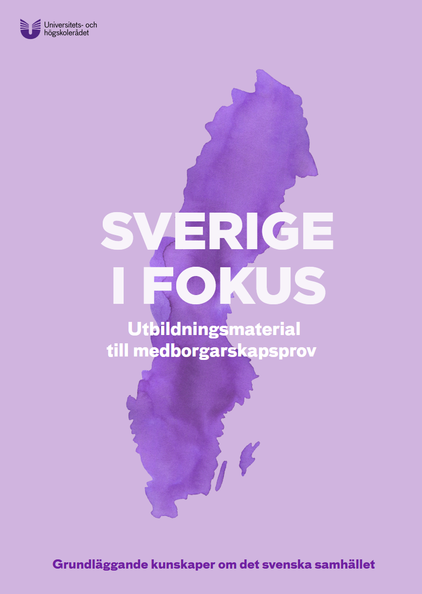

Innehållsförteckning
Inledning
Sverige i fokus är ett utbildningsmaterial som riktar sig till dig som ska göra medborgarskapsprovet för att visa grundläggande kunskaper om det svenska samhället. Sverige i fokus (Thụy Điển trong tâm điểm) là tài liệu học tập dành cho những ai chuẩn bị thi kỳ thi quốc tịch để chứng minh kiến thức cơ bản về xã hội Thụy Điển.
Innehållet är framtaget av Universitets- och högskolerådet tillsammans med Skolverket på uppdrag av regeringen. Nội dung do Hội đồng Đại học và Cao đẳng (UHR) phối hợp cùng Cục Nhà trường (Skolverket) biên soạn theo ủy thác của chính phủ.
Provet kommer att baseras på det här materialet. Mer information finns på uhr.se/utbildningsmaterial Bài kiểm tra sẽ dựa trên tài liệu này. Thông tin chi tiết có tại uhr.se/utbildningsmaterial
Utgivet av Universitets- och högskolerådet, 2026, 1:a upplagan. Produktion: Skolverket. Xuất bản bởi Hội đồng Đại học và Cao đẳng, năm 2026, ấn bản thứ 1. Sản xuất: Cục Nhà trường (Skolverket).
Landet Sverige
Kapitlet handlar om Sveriges geografi, klimat och natur. Chương này nói về địa lý, khí hậu và thiên nhiên của Thụy Điển. Det handlar också om några vigtiga naturresurser och om hur Sverige arbetar för att hantera klimatförändringarna. Nó cũng đề cập đến một số tài nguyên thiên nhiên quan trọng và cách Thụy Điển nỗ lực đối phó với biến đổi khí hậu.
Geografi, klimat och natur
Sverige ligger i Norden i norra Europa. Thụy Điển nằm ở khu vực Bắc Âu thuộc miền bắc Châu Âu. Den nordligaste delen av landet ligger norr om polcirkeln, i det arktiska området. Phần cực bắc của đất nước nằm ở phía bắc của Vòng Bắc Cực, trong vùng Bắc Cực.
Sverige är ett avlångt land som sträcker sig cirka 1 600 kilometer från den nordligaste punkten, Treriksröset, till den sydligaste punkten, Smygehuk. Thụy Điển là một quốc gia thon dài, trải dài khoảng 1.600 km từ điểm cực bắc, Treriksröset, đến điểm cực nam, Smygehuk. Sverige har en lång kust. Thụy Điển có một bờ biển dài. Havet vid den östra kusten heter Östersjön. Vùng biển ở bờ biển phía đông được gọi là Biển Baltic (Östersjön).
Där ligger också Sveriges två største öar, Gotland och Öland. Nơi đó cũng có hai hòn đảo lớn nhất của Thụy Điển là Gotland và Öland. Haven vid den västra kusten heter Skagerrak och Kattegatt. Các vùng biển ở bờ biển phía tây được gọi là Skagerrak và Kattegatt.
Trots sitt nordliga läge har Sverige ett milt klimat jämfört med många andra områden på samma breddgrad. Mặc dù nằm ở vị trí phía bắc, Thụy Điển có khí hậu ôn hòa so với nhiều khu vực khác ở cùng vĩ độ. Det beror på att Golfströmmen och den Nordatlantiska strömmen transporterar varmt vatten från Mexikanska golfen över Atlanten mot Europa. Điều này là do Dòng hải lưu Gulf Stream và Dòng hải lưu Bắc Đại Tây Dương vận chuyển nước ấm từ Vịnh Mexico qua Đại Tây Dương tới Châu Âu. Havsvattnet värmer upp luften och vindarna för sedan in den mildare och fuktigare luften över Sverige. Nước biển làm ấm không khí và gió sau đó mang không khí ôn hòa và ẩm ướt hơn vào Thụy Điển.
Sveriges natur
För ungefär 10 000 år sedan var Sverige täckt av flera kilometer tjock is. Khoảng 10.000 năm trước, Thụy Điển bị bao phủ bởi lớp băng dày vài km. Den här perioden kallas för istiden. Thời kỳ này được gọi là kỷ băng hà.
När isen så småningom smälte bort hade den format landskapet och lämnat tydliga spår efter sig, till exempel många sjöar, skärgårdar med tusentals öar och slätter med jord som går att odla. Khi băng dần tan đi, nó đã định hình cảnh quan và để lại những dấu vết rõ ràng, ví dụ như nhiều hồ nước, quần đảo với hàng ngàn hòn đảo và những đồng bằng có đất có thể canh tác. Isen har också påverkat hur fjällen ser ut i dag. Băng cũng đã ảnh hưởng đến hình dáng của các dãy núi ngày nay.
Fjäll
Bergskedjan Skanderna ligger längs gränsen mot Norge och kallas för fjällen. Dãy núi Skanderna nằm dọc theo biên giới với Na Uy và được gọi là dãy núi (fjällen). Där är klimatet för kallt och blåsigt för att träd ska kunna växa. Ở đó, khí hậu quá lạnh và nhiều gió để cây cối có thể mọc được. Landskapet är öppet och består mest av sten, gräs och låga växter. Cảnh quan mở và chủ yếu bao gồm đá, cỏ và các loài thực vật thấp. Där finns Sveriges högsta berg Kebnekaise som är cirka 2 000 meter högt. Nơi đó có ngọn núi cao nhất của Thụy Điển, Kebnekaise, cao khoảng 2.000 mét.